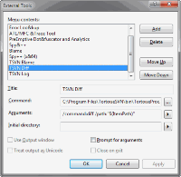
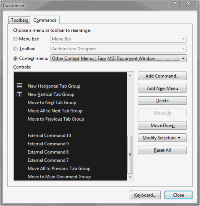
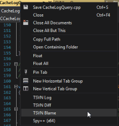

How to integrate TortoiseSVN into Visual Studio
If you're using Visual Studio, you can integrate TortoiseSVN commands to various context menus. Of course, there are Subversion plugins for Visual Studio like AnkhSVN or VisualSVN, with the latter already using TortoiseSVN for many of its UI. Those plugins also have the advantage that when you do refactoring, they automatically record the renames and moves in SVN.
But if you're using one of the free versions of VisualStudio, you can not use those plugins. And sometimes it's still nice to have some of the TortoiseSVN commands available from VisualStudio directly, even if you have such a plugin installed.
The first step is to add the TortoiseSVN commands as external tools, under the menu TOOLS->External Tools....
{kind=link}
Add the name of the command, the path to TortoiseProc.exe and then the parameters for the command.
Use the VS variables wherever needed. Since I add my commands to the context menu of the open file tab, here's the parameters I used:
- /command:blame /path:"$(ItemPath)" /line:$(CurLine)
- /command:diff /path:"$(ItemPath)"
- /command:log /path:"$(ItemPath)"
Now to add those new commands to the file tab context menu, go to TOOLS->Customize..., select the Commands tab, click the radio button Context menu and then select Other Context Menus | Easy MDI Document Window.
{kind=link}
Then click the Add command... button:

Now you have to select the commands. Problem is that the custom commands are not shown with their title but only as External Command X with X being the number of the external command.
In my case, the commands were number 9-11, you might have to do some trial-and-error here. Just add the commands you think are the ones you added and then check if the right ones show up in the context menu.
And this is how the context menu of the open file tab looks like:
{kind=link}